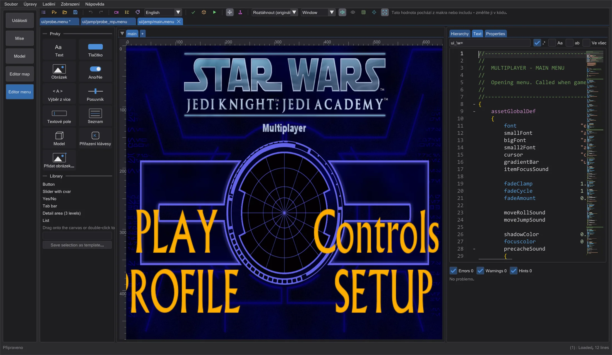
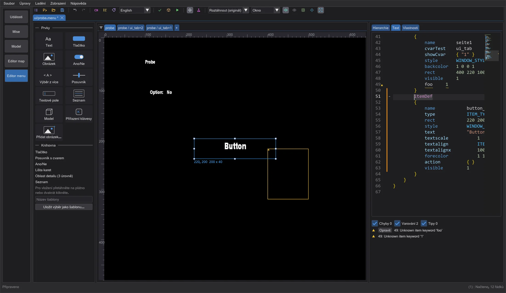
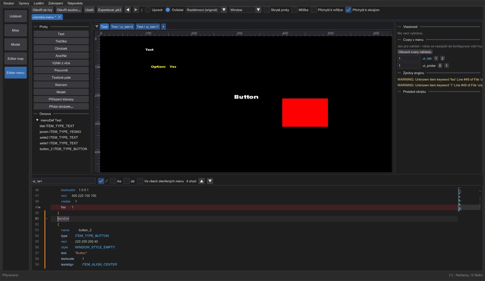
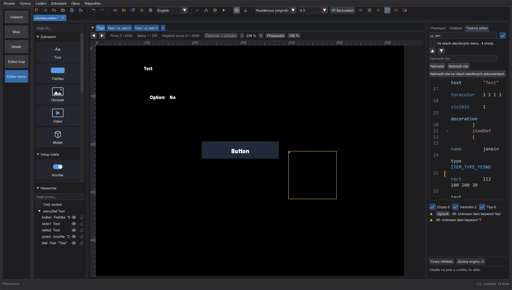

Editor menu
Upravujte menu hry (.menu) jako text a zároveň na plátně 640x480 - čtená, kreslená a ovládaná jako ve hře.
Otevření menu#
Klikněte na Editor menu v liště režimů. Otevřít ze hry vypíše každé menu ui/ hry nastavené v předvolbách (čtené z .pk3, nikdy neměněné); Otevřít soubor nebo puštění souboru otevře menu z disku. Cesta rozhoduje, jak se soubor čte, přesně jako ve hře: ui/jamp/, ui/jk2mp/ a ui/MD_MP/ s preprocesorem pro více hráčů (#include, #define, makra, menudef.h), vše ostatní jako pro jednoho hráče.
Zprávy enginu shows what the game would print while loading the file, word for word and with the line (for example Unknown item keyword 'foo' Line #21). A click jumps to the line; the live diagnosis marks it in the text (Live diagnosis).
Plátno a stránky#

Každý menuDef souboru je karta nad plátnem; prvky, které se ukazují podle cvaru s několika hodnotami (cvarTest + showCvar, jako stránky ui_tab), dostanou kartu na každou hodnotu. + přidá nový menuDef. Plátno je virtuální obrazovka hry 640x480: Roztáhnout (originál) jako původní hra, 4:3 s pruhy a přednastavená rozlišení pro kontrolu poměru stran.
- Kliknutí vybírá (Shift/Ctrl přidává), tažení posouvá, bílé úchyty mění velikost. V textu se mění jen čísla
rect- komentáře a odsazení zůstanou. - Přichytit k okrajům přichytává k okrajům a středům ostatních prvků, obrazovky a vašich vodítek (vytáhněte je z pravítek); Přichytit k mřížce k mřížce. Alt během tažení přichytávání vypne, Shift drží směr. Šipky posouvají o 1, s Shift o 10.
- Prvky vkládá nové prvky (text, tlačítko, obrázek, ano/ne, výběr z více, posuvník, textové pole, seznam, model, přiřazení klávesy) na konec
menuDefstránky. Přidat obrázek vezme PNG, JPG nebo TGA jakogfx/menus/<name>; při exportu se zabalí do .pk3. - Vlastnosti upravuje vybraný prvek; s několika prvky je zarovnává, rozmisťuje a seskupuje. Přenést dopředu/Přenést dozadu mění pořadí kreslení (hra kreslí v pořadí souboru). Zamčeno zabrání posunutí prvku.
Ovládání a cvary#

Ovládat spustí menu jako hra: najetí myší dává fokus (mouseEnter, onFocus), kliknutí spustí action prvku, ano/ne, výběr z více a posuvníky mění svůj cvar a open, close, show, hide, setfocus, setcvar, setitemtext, transition ... fungují jako v ui_shared. Co potřebuje hru (zvuky, exec, uiScript), se objeví v Protokol skriptu.
Cvary v menu vypíše každý cvar, který menu čte nebo nastavuje, ty řídící viditelnost první, s hodnotami, které se vyskytují. Změňte je a uvidíte jiné stavy. Existují jen v náhledu - konfigurace vaší hry se nikdy nezmění.
Editor kódu#

ui_tab ukazuje červený rámeček, kliknutí na Ano/Ne mění ui_probe.| Ctrl + F / Ctrl + H | najít / nahradit (regex, velikost písmen, celé slovo, všechna otevřená menu); shody jsou označené v minimapě |
| Ctrl + D / Ctrl + Shift + L / Alt + Click | další výskyt / všechny výskyty / další kurzor (více kurzorů) |
| Ctrl + Mezerník | doplňování: klíčová slova, cvary, názvy prvků, cesty shaderů, řetězce @MENUS |
| F12 / Ctrl + Click | přejít na menuDef nebo itemDef názvu pod kurzorem |
| Ctrl + F2 / F2 / Shift + F2 | záložka jako v editoru skriptů (i kliknutím do okraje) |
| Ctrl + / , Tab / Shift + Tab | zakomentovat řádky, odsadit / zrušit odsazení |
Okraj funguje jako v editoru skriptů: oranžová = změněno od uložení, zelená = změněno a uloženo, modrá = zpět ve stavu při otevření. menuDef, itemDef a bloky skriptů se sbalují pomocí +/- vedle čísel řádků. Kliknutí na prvek na plátně skočí na jeho itemDef a kurzor v itemDef prvek vybere.

Uložení a export#
Uložit zapíše text přesně tak, jak je v editoru; soubor otevřený ze hry se uloží jinam. Exportovat .pk3 zabalí menu pod jeho cestou ve hře plus vaše obrázky do .pk3. Ani jedno nikdy nezapisuje do složek hry.